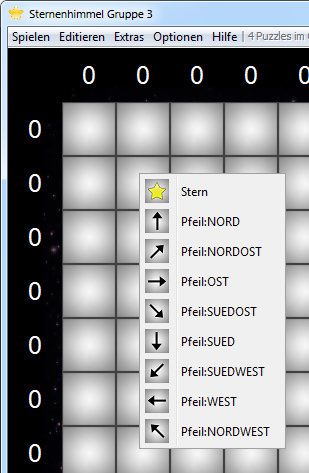

Ein eigenes Puzzle wird über das Menü "Editieren - Puzzle erstellen" oder nach Starten von Sternenhimmel DELUXE im Hauptmenü über die Schaltfläche "Neus Puzzle erstellen" erstellt

Es öffnet sich ein Dialog zur Eingabe der Spielfeldgröße. Die Größe eines Spiel beträgt mindestens 2 x 2 und maximal 40 x 40. Bei der EIngabe anderer Größen erscheint eine Fehlermeldung und der Dialog erscheint erneut.

Das Spielfeld öffnet sich im Editier-Modus.

Im rechten Bereich wird die gesetzte Anzahl an Sternen gezeigt, ebenso der derzeitige Schwierigkeitsgrad. Die Schaltfläche "Check" überprüft, ob das Puzzle eindeutig lösbar ist. Die Größe des Puzzles lässt sich jederzeit über die Schaltfläche "Change" anpassen.
Sterne und Pfeile werden mit Linksklick auf das jeweilige Feld gesetzt.

Die Anzahl der Sterne in den Spalten bzw. Zeilen aktualisieren automatisch. Mit Rechtsklick wird der gesetzte Stern oder Pfeil wieder entfernt.
Während des Erstellen des Spiels kann jederzeit überprüft werden, ob das Spiel lösbar ist. Dazu im Menü "Editieren" den Eintrag "Lösungsweg prüfen" auswählen.

Um das erstellte Spiel spielen zu können, muss dieses über das Menü "Editieren - Puzzle freigeben" freigegeben werden. Vor der Freigabe des Puzzles wird der Lösungsweg vorab automatisch überprüft.
Ist das Puzzle freigegeben, kann dieses online gespeichert werden und ist für jeden anderen Spieler spielbar. Dafür erscheint nach Freigabe des Puzzle folgernder Dialog:

Damit ein Puzzle freigegeben wird, muss auf jeden Stern mindestens ein Pfeil zeigen, jeder Pfeil muss auf mindestens einen Stern zeigen und das Puzzle muss eindeutig lösbar sein. Hier ein Beispiel eines nicht eindeutig lösbaren Puzzles:

Der Stern links unten könnte genauso ein Feld höher sitzen, während der Stern oben rechts ein Feld tiefer sitzen könnte.
Created with the Personal Edition of HelpNDoc: Easily create EPub books